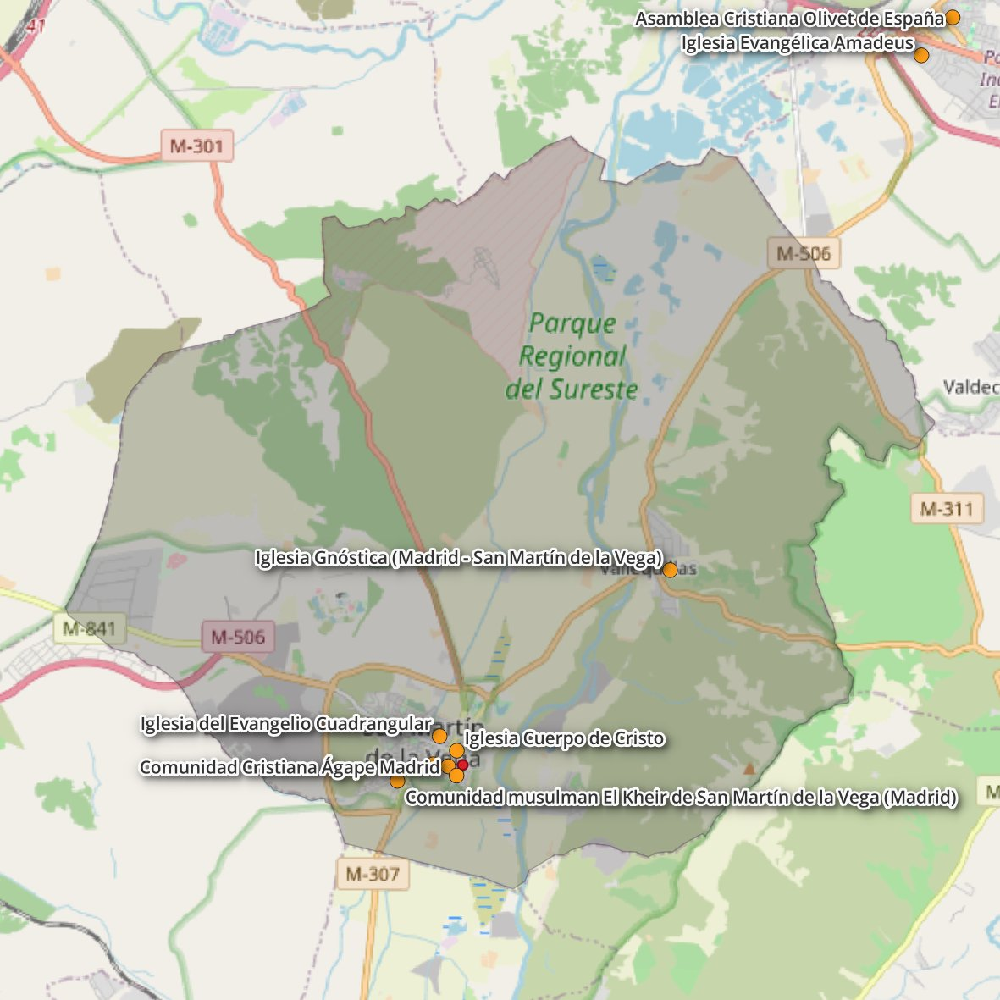
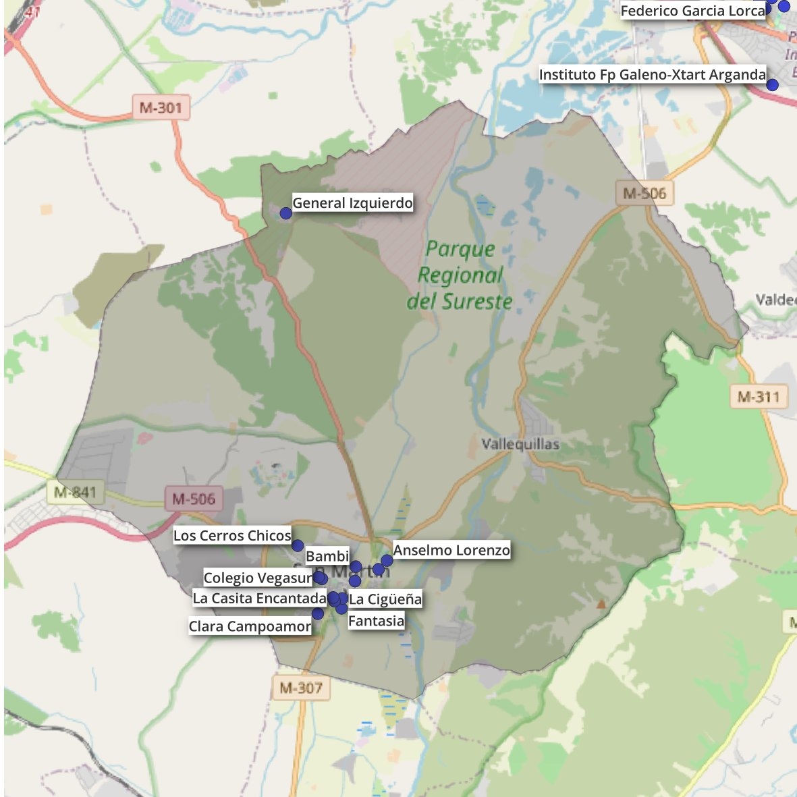

Puntos de interés en el territorio parroquial
Parroquia Natividad de Nuestra Señora (San Martín de la Vega) · Arciprestazgo de Valdemoro
Entidades religiosas no católicas

7 entidades religiosas no católicas en el territorio de la parroquia.
Evangélicos (3)
- Comunidad Cristiana Ágape MadridCalle Valdemoro 17 Local, SAn Martín de la Vega
- Iglesia Cuerpo de CristoCalle Picasso 5, SAn Martín de la Vega
- Iglesia del Evangelio CuadrangularCalle Buero Vallejo 6, SAn Martín de la Vega
Musulmanes (2)
- Comunidad musulman El Kheir de San Martín de la Vega (Madrid)Calle Pintor Rafael Boti 13, SAn Martín de la Vega
- Comunidad Musulmana Okba de San Martín de la VegaCalle Tres de Abril 1 Local 4, SAn Martín de la Vega
Gnósticos (1)
- Iglesia Gnóstica (Madrid - San Martín de la Vega)Calle Colibrí 2, SAn Martín de la Vega
Ortodoxos (1)
- Parroquia Ortodoxa Rumana Santa Eulalia de MéridaCalle de la Soledad 5, SAn Martín de la Vega
Fuente: Registro de Entidades Religiosas del Ministerio de la Presidencia, Justicia y Relaciones con las Cortes. Situación en el mapa: dirección geocodificada con CartoCiudad (IGN) o Nominatim (OpenStreetMap).
Centros educativos

15 centros educativos en el territorio de la parroquia (público: 11, privado: 3, privado concertado: 1).
| Centro | Tipo | Titularidad | Domicilio | Web |
|---|---|---|---|---|
| ANSELMO LORENZO | Instituto de educación secundaria | Público | Avenida abogados de atocha, 4, 28330 San Martín de la Vega | Página web |
| BAMBI | Escuela infantil privada | Privado | Avenida de la Comunidad de Madrid, s/n, 28330 San Martín de la Vega | |
| CLARA CAMPOAMOR | Colegio de educación infantil y primaria | Público | Camino de Valdemoro, 11, 28330 San Martín de la Vega | Página web |
| COLEGIO VEGASUR | Centro privado de educación infantil, primaria y secundaria | Privado concertado | Calle de Fernando el Católico, 8, 28330 San Martín de la Vega | Página web |
| ESTE-2, SAN MARTIN DE LA VEGA | Zona casas de niños | Público | Avenida del Doce de Octubre, 33, 28330 San Martín de la Vega | Página web |
| FANTASIA | Escuela infantil | Público | Calle Rosalía de Castro, 5, 28330 San Martín de la Vega | Página web |
| GENERAL IZQUIERDO | Colegio de educación infantil y primaria | Público | Calle Juan de Austria, 40, 28330 San Martín de la Vega | Página web |
| JORGE GUILLEN | Colegio de educación infantil y primaria | Público | Avenida de Nuestra Señora de la Vega, 6, 28330 San Martín de la Vega | Página web |
| LA CASITA ENCANTADA | Escuela infantil privada | Privado | Calle Magallanes, 3, 28339 San Martín de la Vega | Página web |
| LA CIGÜEÑA | Escuela infantil privada | Privado | Calle de Ramón y Cajal, 40, 28330 San Martín de la Vega | |
| LOS CERROS CHICOS | Colegio de educación infantil y primaria | Público | Calle San Cristóbal, 2, 28330 San Martín de la Vega | Página web |
| LOS PICAPIEDRA | Escuela infantil-casa de niños | Público | Avenida del Doce de Octubre, 33, 28330 San Martín de la Vega | Página web |
| SAN MARCOS | Colegio de educación infantil y primaria | Público | Avenida abogados de atocha, 16, 28330 San Martín de la Vega | Página web |
| SAN MARTIN DE LA VEGA | Escuela municipal de música | Público | Calle del Maestro Rodrigo, 2, 28330 San Martín de la Vega | Página web |
| SAN MARTIN DE LA VEGA | Centro público de educación de personas adultas | Público | Calle del Maestro Rodrigo, 2, 28330 San Martín de la Vega | Página web |
Fuente: registro de centros educativos de la Comunidad de Madrid. Solo se recogen los centros de alta.